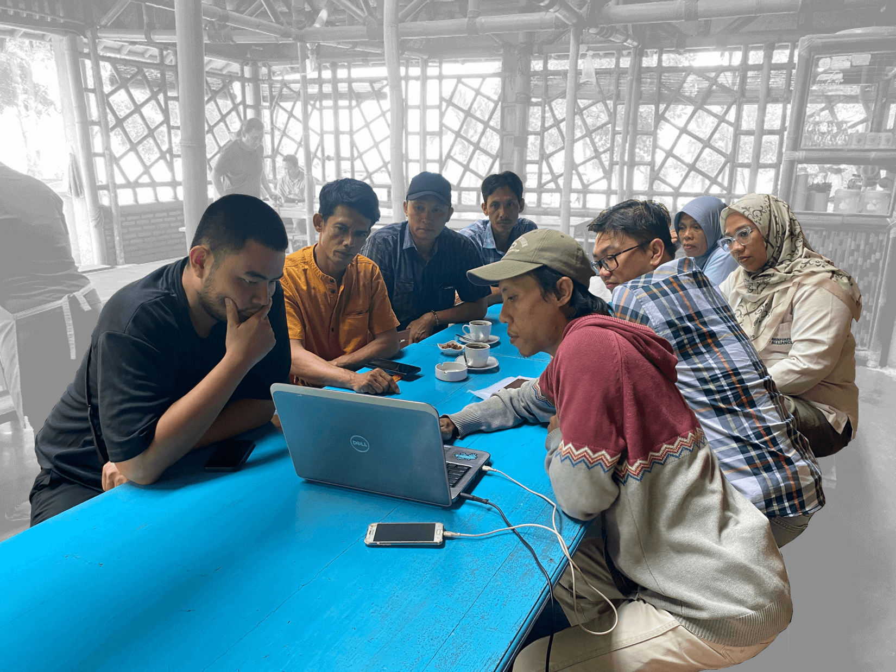
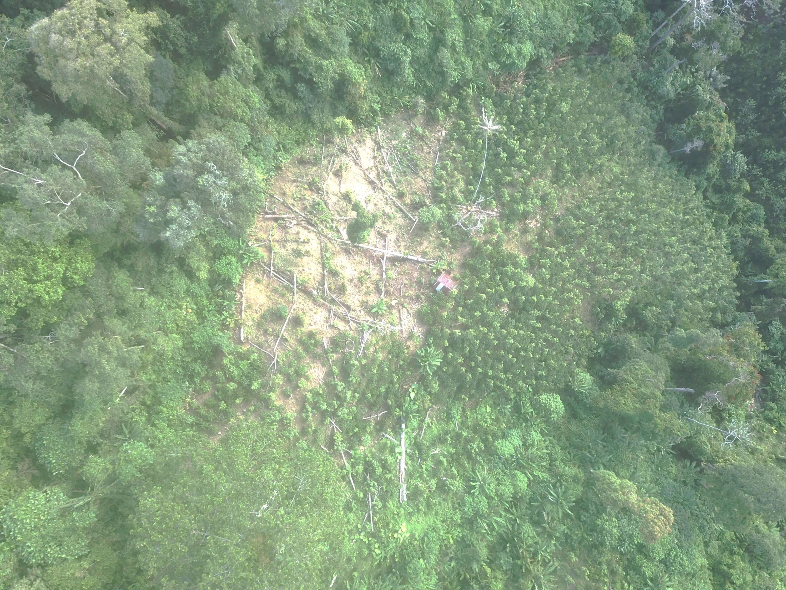
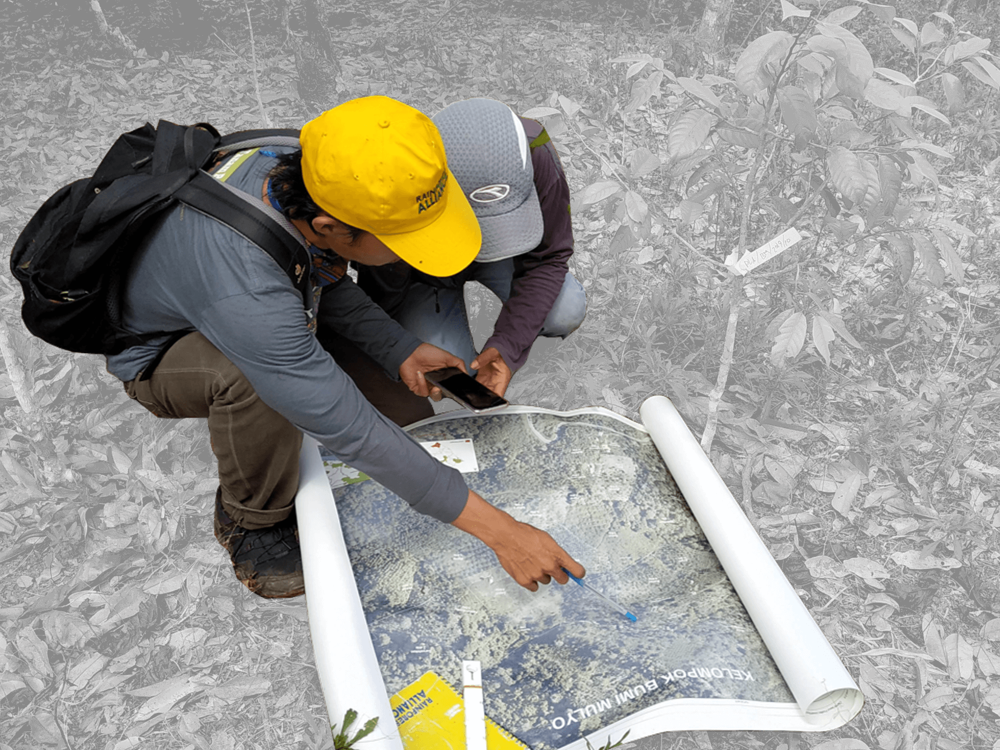

Hasil Analisis Sementara
Identifikasi Area
Berdasarkan data Peta Perkebunan Kopi hasil penelitian Fardinatri et al. (2024) dapat diketahui gambaran potensi wilayah untuk komoditas kopi yang terdapat di tiga Kecamatan
(Bandar Negeri Semuong, Semaka, Wonosobo). Dari hasil pengolahan data, menunjukkan bahwa lebih dari 50% wilayah perkebunan kopi berada di Areal Penggunaan Lain:
Daftar 10 Desa teratas dengan potensi perkebunan kopi
| No |
Desa |
Potensi Perkebunan Kopi |
Areal
Penggunaan Lain |
Kawasan
Hutan |
Total
Luas (ha) |
| 1 |
Atar Lebar |
172 |
374 |
546 |
| 2 |
Sinar Bangun |
198 |
200 |
398 |
| 3 |
Gunung Doh |
144 |
35 |
179 |
| 4 |
Sanggi |
131 |
- |
131 |
| 5 |
Simpang Bayur |
92 |
1 |
93 |
| 6 |
Sanggi Unggak |
69 |
- |
69 |
| 7 |
Bandar Sukabumi |
68 |
- |
68 |
| 8 |
Negeri Agung |
55 |
- |
55 |
| 9 |
Tulung Sari |
10 |
- |
10 |
| 10 |
Rajabasa |
8 |
- |
8 |
|
*Lainnya |
5 |
- |
5 |
|
TOTAL |
952 |
610 |
1.562 |
*Lainnya: Banding
Daftar 10 Desa teratas dengan potensi perkebunan kopi
| No |
Desa |
Potensi Perkebunan Kopi |
Areal
Penggunaan Lain |
Kawasan
Hutan |
Total
Luas (ha) |
| 1 |
Kacapura |
138 |
- |
138 |
| 2 |
Way Kerap |
67 |
64 |
131 |
| 3 |
Sedayu |
122 |
1 |
123 |
| 4 |
Margo Mulyo |
94 |
6 |
100 |
| 5 |
Tulung Asahan |
38 |
58 |
96 |
| 6 |
Karang Agung |
65 |
18 |
82 |
| 7 |
Karang Rejo |
69 |
- |
69 |
| 8 |
Srikaton |
34 |
34 |
67 |
| 9 |
Pardawaras |
35 |
33 |
67 |
| 10 |
Sukaraja |
60 |
- |
60 |
|
*Lainnya |
310 |
8 |
318 |
|
TOTAL |
1.031 |
222 |
1.253 |
*Lainnya: Sukajaya, Tugu Papak, Sidomulyo, Tugu Rejo, Bangun Rejo, Sudimoro Bangun, Kanoman, Sudimoro, Sri Purnomo, Sidodadi, Sri Kuncoro, Garut.
Daftar 10 Desa teratas dengan potensi perkebunan kopi
| No |
Desa |
Potensi Perkebunan Kopi |
Areal
Penggunaan Lain |
Kawasan
Hutan |
Total
Luas (ha) |
| 1 |
Sampang Turus |
223 |
50 |
273 |
| 2 |
Way Panas |
146 |
81 |
227 |
| 3 |
Bandar Kejadian |
160 |
8 |
168 |
| 4 |
Pekon Balak |
90 |
- |
90 |
| 5 |
Karang Anyar |
52 |
- |
52 |
| 6 |
Padang Ratu |
49 |
- |
49 |
| 7 |
Kunyayan |
44 |
- |
44 |
| 8 |
Padang Manis |
38 |
- |
38 |
| 9 |
Negeri Ngarip |
32 |
- |
32 |
| 10 |
Tanjung Kurung |
31 |
- |
31 |
|
*Lainnya |
169 |
- |
169 |
|
TOTAL |
1.033 |
139 |
1.173 |
*Lainnya: Pardasuka, Way Liwok, Soponyono, Sumur Tujuh, Kalirejo, Banjar Negoro, Lakaran, Kalisari, Banyu Urip, Dadirejo, Dadimulyo, Banjarsari, Wonosobo, Sridadi, Dadisari, Kejadian, Sri Melati, Sinar Saudara.
Rantai Pasokan Kopi

Dok. lapangan (Juli, 2025)
Proses penelusuran awal untuk rantai pasokan kopi PT. Asia Makmur di wilayah kajian dimulai dengan melakukan crosscheck
hasil verifikasi plot kebun kopi (geodata valid) kepada kolektor kopi di Kabupaten Tanggamus yaitu Gudang Mujur Jaya
yang berlokasi di Kecamatan Kota Agung dan beberapa sub kolektor dari tiga kecamatan (Bandar Negeri Semuong, Semaka, Wonosobo)
Tahap lanjutan untuk penelusuran pada pembeli lokal dan petani pemasok pada tingkat kebun untuk saat ini sedang dalam proses follow up.
Hasil identifikasi sementara, berdasarkan dari (geodata valid) yang di crosscheck kepada kolektor /sub kolektor secara langsung,
diketahui asal plot kebun petani pemasok kopi untuk Asia Makmur per Kecamatan adalah sebagai berikut:
-
Kecamatan Bandar Negeri Semuong.
- Kelompok petani HKm Tunas Jaya (Desa Atar lebar)
- Kelompok petani HKm Hutan Lestari (Desa Sinar Bangun)
- Kelompok petani Kebun APL (Desa Simpang Bayur)
-
Kecamatan Semaka
- Kelompok petani HKm Lestari Sejahtera (Desa Way Kerap, Pardawaras, Srikaton)
-
Kecamatan Wonosobo
Rincian asal plot kebun petani pemasok kopi
| Kecamatan |
Desa |
Group |
Plot |
Luas (ha) |
Produksi (kg) |
| BNS |
Atar Lebar |
HKm Tunas Jaya |
585 |
837 |
|
|
Sinar Bangun |
HKm Hutan Lestari |
71 |
106 |
|
|
Simpang Bayur |
Kebun APL |
121 |
77 |
|
| Semaka |
Way Kerap |
HKm Lestari Sejahtera |
317 |
285 |
|
|
Pardawaras |
HKm Lestari Sejahtera |
111 |
130 |
|
|
Srikaton |
HKm Lestari Sejahtera |
20 |
23 |
|
| Wonosobo |
- |
- |
- |
- |
- |
| TOTAL |
|
|
1.225 |
1.457 |
|
Hasil identifikasi pelaku dalam rantai pasokan kopi (sampel)
| Kecamatan |
Desa |
Group |
Pelaku dalam rantai pasokan |
| Pembeli Lokal |
Sub Kolektor |
Kolektor |
Ekportir |
| BNS |
Atar Lebar |
HKm Tunas Jaya |
|
Sarwo Edi |
Mujur Jaya |
Asia Makmur |
| BNS |
Sinar Bangun |
HKm Hutan Lestari |
|
Joni |
Mujur Jaya |
Asia Makmur |
| BNS |
Simpang Bayur |
Kebun APL |
|
Sunarti |
Mujur Jaya |
Asia Makmur |
| BNS |
Simpang Bayur |
Kebun APL |
|
Jumaroh |
Mujur Jaya |
Asia Makmur |
| Semaka |
Way Kerap |
HKm Lestari Sejahtera |
Supriyanto |
Sarwo Edi |
Mujur Jaya |
Asia Makmur |
| Semaka |
Pardawaras |
HKm Lestari Sejahtera |
|
Sarwo Edi |
Mujur Jaya |
Asia Makmur |
| Semaka |
Srikaton |
HKm Lestari Sejahtera |
Tasin |
Sarwo Edi |
Mujur Jaya |
Asia Makmur |
| *Lainnya |
*Lainnya |
*Lainnya |
|
Buyung |
Mujur Jaya |
Asia Makmur |
| *Lainnya |
*Lainnya |
*Lainnya |
|
Eka Saputra |
Mujur Jaya |
Asia Makmur |
*Lainnya: kolektor /sub kolektor membeli pasokan kopi dari Kabupaten lain (Lampung Barat, Sumsel)
Risiko Deforestasi

Dok. lapangan (foto udara, 2023)
Riwayat Kehilangan Tutupan Pohon.
Berikut ini adalah gambaran tren data kehilangan tutupan pohon pada periode Tahun 2001-2024
serta peringatan gangguan hutan Tahun 2025 (update s.d Bulan Agustus)
berdasarkan data yang dirilis oleh platform Global Forest Watch (GFW). Dari grafik dapat terlihat tren kehilangan tutupan pohon dalam 4 tahun terakhir (setelah cut-off date 2020) mengalami tren peningkatan untuk masing-masing wilayah di 3 Kecamatan.
Setelah tahun 2020 mulai terjadi peningkatan kehilangan tutupan pohon pada tahun 2023 untuk semua wilayah kecamatan
baik di dalam areal penggunaan lain maupun kawasan hutan. Lonjakan yang signifikan terjadi dalam area kawasan hutan di Kecamatan Bandar Negeri Semuong.
belum bisa dipastikan apa penyebab peningkatan tersebut, namun hal ini diduga ada korelasi dengan aktifitas para petani dalam mengelola kebun mereka (terutama petani kopi).
Dilansir dari Republika.co.id yang menyebutkan bahwa pada tahun tersebut telah terjadi lonjakan harga biji kopi robusta "asalan" naik drastis dari sekitar
Rp 18.000–20.000/kg menjadi Rp 35.000–38.000/kg, lonjakan signifikan yang tertinggi sepanjang sejarah setempat pada saat itu.
Kemungkinan dari lonjakan harga komoditas yang drastis menjadi awal pemicu para petani yang sebelumnya memiliki lahan terbengkalai kembali aktif menggarap lahan mereka,
sehingga aktifitas tersebut terdeteksi sebagai kehilangan tutupan pohon oleh sensor pemantauan hutan GFW.
Kehilangan Tutupan Pohon Periode Tahun 2001 - 2024
Sumber Data:
Global Forest Watch
Catatan: Kehilangan tutupan pohon tidak selalu berarti deforestasi,
Hilangnya tutupan pohon dapat disebabkan oleh manusia atau alam, dan dapat bersifat permanen atau sementara.
Deforestasi berbeda karena biasanya merujuk pada perubahan jangka panjang yang disebabkan oleh manusia dari hutan ke penggunaan lahan lain.
Integrated Deforestation Alert Tahun 2025
Sumber Data:
Global Forest Watch
Studi tahun 2024 (Fardinatri, et al.) mengemukakan bahwa, aksesibilitas jalan memainkan peran penting dalam kegiatan deforestasi di daerah Tanggamus,
dengan kontribusi persentase sekitar 17,28%, selain itu akses ke perkebunan didalam kawasan hutan memainkan peran cukup menonjol dalam deforestasi,
dengan kontribusi persentase sekitar 17,18%. Studi ini juga menyelidiki motif deforestasi dengan mengoverlay data deforestasi historis (setelah 2014)
dengan data tutupan lahan. Analisis penginderaan jauh menemukan bahwa lebih dari 50% deforestasi di Tanggamus disebabkan oleh sektor pertanian
(yaitu, kopi, agroforestri campuran, dan budidaya lainnya).
Penilaian Risiko Deforestasi Pada Tingkat Lahan
Hasil penilaian risiko deforestasi (berdasarkan analisis GIS menggunakan tools WHISP) pada tingkat lahan (plot kebun) dalam rantai pasokan kopi PT. Asia Makmur,
dapat dilihat dari keseluruhan plot kebun dalam rantai pasokan terdapat 1% yang berisiko tinggi, 76% berisiko rendah dan 23% butuh informasi lanjutan. Uraian data sebagai berikut:
Risiko Rendah: Setiap lahan di luar hutan yang dipetakan, bertumpangan dengan
peta komoditas yang tersedia atau dengan peta gangguan hutan (deforestasi) yang
teramati sebelum 2020.
Risiko Tinggi: Lahan berada di dalam hutan yang dipetakan, tidak berada di
dalam peta komoditas mana pun, dan hanya gangguan hutan (deforestasi) yang
terdeteksi setelah 2020.
Butuh Informasi Lanjutan: Lahan yang belum terganggu atau tidak memiliki bukti lain
untuk menentukan tingkat risikonya. Klasifikasi ini menyoroti
area yang memerlukan penyelidikan lebih lanjut.
Buka dashboard penilaian risiko |
Unduh data/tabel penilaian risiko

Dok. lapangan (Monitoring, 2023)
Butuh Informasi Lanjutan.
Terkait hal tersebut untuk memperoleh informasi tambahan tentang penilaian risiko pada plot kebun yang memerlukan informasi tambahan untuk mendukung serta
memperjelas data maka dilakukan overlay dengan lapisan pendukung yaitu peta tutupan lahan terbaru /perkebunan kopi hasil studi Tahun 2024 (Fardinatri, et al) Dari hasil overlay diketahui bahwa ...% plot kebun berada pada tutupan lahan kebun kopi dan ...% plot kebun berada pada tutupan lahan kebun agroforestri.
Inspeksi Visual
Berikut ini adalah beberapa sampel hasil verifikasi dekstop melalui inspeksi visual menggunakan citra satelit resolusi tinggi
yang tersedia yaitu Google Earth Satelite, dengan membandingkan penampakan tutupan lahan pada lokasi sampel sebelum dan sesudah terjadi perubahan.